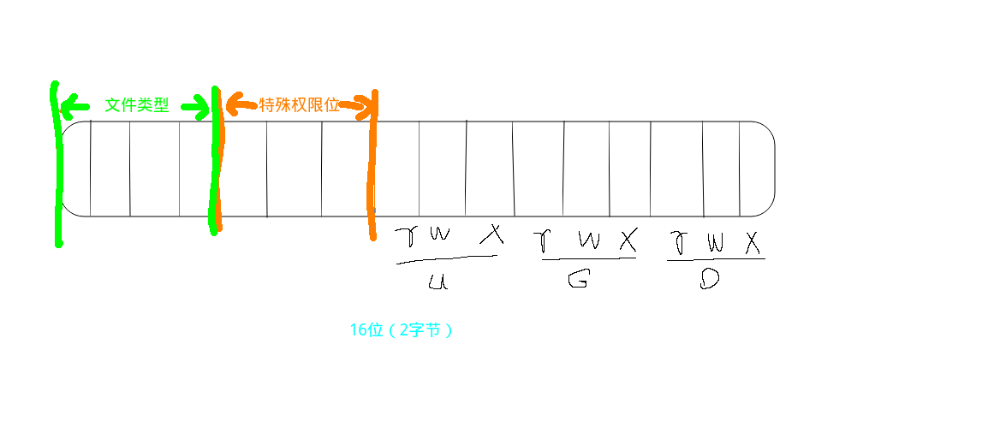

文件相关系统调用 open/close函数 open/close函数是系统调用中用来打开和关闭文件的函数
函数原型
1 2 3 4 #include <fcntl.h> int open (const char *pathname, int flags) int open (const char *pathname, int flags, mode_t mode) int close (int fd)
常用flags
flags
explain
O_RDONLY
只读打开
O_WRONLY
只写打开
O_RDWR
读写
O_APPEND
追加
O_CREAT
创建
O_EXCL
文件是否存在
O_TRUNC
截断
O_NONBLOCK
非阻塞
返回值
成功： 打开文件所得到对应的文件描述符(int)
失败： -1, 设置errno
常见错误
打开文件不存在
以写方式打开只读文件（打开文件没有相应权限）
以只写方式打开目录
e.g.
1 2 3 4 5 6 7 8 9 10 11 12 13 #include <stdio.h> #include <unistd.h> #include <errno.h> #include <string.h> int main () int fd = 0 ; fd = open("./test.txt" , O_RDONLY | O_CREAT | O_TRUNC, 0664 ); printf ("fd = %d\terrno = %d\n" , fd, errno); printf ("strerror = %s\n" , strerror(errno)); close(fd); return 0 ; }
read/write函数 read/write函数是系统调用中唯一的“读”、“写”函数
read函数 1 2 #include <unistd.h> ssize_t read (int fd, void *buf, size_t count)
@param:
write函数 1 2 #include <unistd.h> ssize_t write (int fd, const void *buf, size_t count)
1 2 3 4 5 6 7 8 9 @param: fd: 文件描述符 buf：待写数据的缓冲区 count：数据大小 @return: scessful: 读到的字节数 failure：-1, 设置errno，此时`errno != EAGAIN/EWOULDBLOCK` -1 : 但是`errno = EAGAIN/EWOULDBLOCK` ,此时不是读文件失败，而是read在读一个非阻塞的设备文件或网络文件，并且文件无数据。
例子( 实现简单的cp命令)
1 2 3 4 5 6 7 8 9 10 11 12 13 14 15 16 17 18 19 #include <stdio.h> #include <unistd.h> #include <fcntl.h> int main (int argc, char * argv[]) char buf[1024 ] = "" ; int fd1 = open(argv[1 ], O_RDONLY); int fd2 = open(argv[2 ], O_RDWR | O_CREAT | O_TRUNC, 0664 ); int n = 0 ; while ((n = read(fd1, buf, 1024 )) != 0 ){ write(fd2, buf, n); } close(fd1); close(fd2); return 0 ; }
文件描述符 PCB 进程控制块，本质结构体
成员：文件描述符表
文件描述符：0/1/2/3/4 … /1023 每次进程新打开的文件 这个文件的描述符都是表中可用的最小的
0 - STDIN_FILENO
1 - STDOUT_FILENO
2 - STDERR_FILENO
所以一个进程能打开的最大文件数为1024个
FILE结构体
1 2 3 4 5 6 7 8 9 struct file { ... 文件偏移量; 文件的访问权限; 文件的打开标志; 文件内核缓冲区的首地址; struct operations *f op ; ... };
阻塞、非阻塞(文件的属性) 产生阻塞的场景：
读设备文件。（读常规文件无阻塞概念）
读网络文件。
fcntl函数 改变一个已经打开的文件的 访问控制属性
本质就是将访问控制属性的位图对应值 位或 |操作
1 2 #include <fcntl.h> int fcntl (int fd, int cmd, ... )
获取文件状态： F_GETFL
@return 位图：int类型有32个位 每个访问控制属性对应一个位
设置文件状态： F_SETFL
使用例子
1 2 3 4 5 #include <fcntl.h> int fd = open("\dev\tty" , O_RDONLY); int flags = fcntl(fd, F_GETFL);flags |= O_NONBLOCK fcntl(fd, F_SETFL, flags);
实现dup函数的功能：F_DUPFD
参数3： 被占用了，放回最小可用的fd 未被占用的，返回等于该值的文件描述符
lseek函数 函数原型：
1 2 #include <unistd.h> off_t lseek (int fd, off_t offset, int whence)
1 2 3 4 5 6 7 参数： fd： 文件描述符 offset：偏移量 whence：起始偏移位置：SEEK_SET / SEEK_CUR / SEEK_END 返回值： scesseful：当前光标位置较文件起始位置偏移量(以字节为单位) failed：-1
应用场景：
文件的“读”、“写”使用同一偏移位置
使用lseek获取文件大小
1 2 3 4 5 6 7 8 9 10 11 12 13 14 15 16 17 18 19 20 21 #include <stdio.h> #include <stdlib.h> #include <unistd.h> #include <fcntl.h> int main (int argc, char * argv[]) int fd = open(argv[1 ], O_RDONLY); if (fd == -1 ){ perror("open error" ); exit (1 ); } int len = lseek(fd, 0 , SEEK_END); if (len < 0 ){ perror("lseek error" ); exit (1 ); } printf ("file size: %d\n" , len); close(fd); return 0 ; }
使用lseek扩展文件大小：必须引起IO操作才能拓展文件真正大小int truncate(const char *path, off_t length);函数直接拓展文件为指定大小
1 2 3 4 5 6 7 8 9 10 11 12 13 14 15 16 17 18 19 20 21 22 23 24 25 26 27 #include <stdio.h> #include <stdlib.h> #include <unistd.h> #include <fcntl.h> int main (int argc, char * argv[]) int fd = open(argv[1 ], O_WRONLY); if (fd == -1 ){ perror("open error\n" ); exit (1 ); } int expansion = 1 ; printf ("input expansion size: " ); fflush(stdin ); scanf ("%d" , &expansion); printf ("size: %d\n" , expansion); fflush(stdin ); int len = lseek(fd, expansion-1 , SEEK_END); if (len < 0 ){ perror("lseek error" ); exit (1 ); } write(fd, "" , 1 ); close(fd); return 0 ; }
以二进制查看文件
1 2 od -tcx filename od -tcd filename
文件系统 文件储存 inode
其本质是为结构体，存储的属性信息。
如：权限、类型、大小、时间、用户、**盘块位置(指向data)**。。。。也叫做文件属性管理结构
大多数inode都储存在硬盘上，少量常用、近期使用的inode会被缓存到内存中
查看inode命令：stat filename
dentry
目录项，其本质是结构体
重要的成员变量有两个{文件名, inode , …}, 而文件内容(data)保存在磁盘盘块中
硬链接就是创建多个dentry指向同一个inode
文件操作 stat函数与lstat函数 获取文件属性，从inode结构体中获取
1 2 3 4 5 #include <unistd.h> #include <sys/stat.h> int stat (const char *pathname, struct stat *statbuf) int lstat (const char *pathname, struct stat *statbuf)
struct stat
1 2 3 4 5 6 7 8 9 10 11 12 13 14 15 16 17 18 19 20 21 22 23 24 struct stat { dev_t st_dev; ino_t st_ino; mode_t st_mode; nlink_t st_nlink; uid_t st_uid; gid_t st_gid; dev_t st_rdev; off_t st_size; blksize_t st_blksize; blkcnt_t st_blocks; struct timespec st_atim ; struct timespec st_mtim ; struct timespec st_ctim ; #define st_atime st_atim.tv_sec #define st_mtime st_mtim.tv_sec #define st_ctime st_ctim.tv_sec };
1 2 3 4 5 6 参数 pathname：文件路径 buf：存放文件属性 返回值 成功：0 失败：-1，设置errno
例子：
1 2 3 4 5 6 7 8 9 10 11 12 13 14 15 16 17 18 19 20 21 #include <stdio.h> #include <stdlib.h> #include <unistd.h> #include <sys/stat.h> int main (int argc, char * argv[]) struct stat sbuf ; int result = stat(argv[1 ], &sbuf); if (result != 0 ){ perror("stat error" ); exit (1 ); } printf ("Inode number: %ld\n" , sbuf.st_ino); printf ("File size: %ld\n" , sbuf.st_size); printf ("User ID: %d\n" , sbuf.st_uid); printf ("Group ID: %d\n" , sbuf.st_gid); printf ("File mode %o\n" , sbuf.st_mode); return 0 ; }
文件类型判断方法
文件类型与权限位图（2个字节）
st_mod 取高4位。但是应该使用宏函数：
1 2 3 4 5 6 7 S_ISREG(m); S_ISDIR(m); S_ISCHR(m); S_ISBLK(m); S_ISFIFO(m); S_ISLNK(m); S_ISSCOK(m);
注意stat与lstat穿透链接符合的区别：
例子：
1 2 3 4 5 6 7 8 9 10 11 12 13 14 15 16 17 18 19 20 21 22 23 24 25 26 27 28 29 30 31 32 33 34 35 36 37 38 39 40 41 42 43 44 45 46 47 48 49 50 51 52 53 54 55 56 57 #include <stdio.h> #include <stdlib.h> #include <sys/stat.h> #include <unistd.h> int what_file (int is_through, const char *pathname, struct stat *statbuf) int main (int argc, char * argv[]) struct stat sb ; if (argc != 2 ) { fprintf (stderr , "Usage: %s <pathname>\n" , argv[0 ]); return 1 ; } what_file(1 , argv[1 ], &sb); what_file(0 , argv[1 ], &sb); return 0 ; } int what_file (int is_through, const char *pathname, struct stat *statbuf) if (is_through != 0 ) { if (stat(pathname, statbuf) != 0 ){ perror("stat error\n" ); exit (1 ); } printf ("stat: " ); } else { if (lstat(pathname, statbuf) != 0 ) { perror("lstat error\n" ); exit (0 ); } printf ("lstat: " ); } int m = statbuf->st_mode; if (S_ISREG(m)){ printf ("It's a %s file\n" , "regular" ); } else if (S_ISDIR(m)) { printf ("It's a %s file\n" , "directory" ); } else if (S_ISLNK(m)) { printf ("It's a %s file\n" , "symbolc link" ); } else if (S_ISCHR(m)) { printf ("It's a %s file\n" , "character device" ); } else if (S_ISFIFO(m)) { printf ("It's a %s file\n" , "FIFO/pipe" ); } else { printf ("It's a %s file\n" , "unkown" ); } return 1 ; }
access 函数 测试指定文件是否存在/具有某种权限，它默认是不穿透链接的
函数原型
1 2 #include <unistd.h> int access (const char *pathname, int mode)
1 2 3 4 5 6 7 参数： pathname： 文件名 mode： 权限，R_OK, W_OK, X_OK F_OK被用来测试某个文件是否存在 返回值： 成功：0 失败：-1, 设置errno为相应值
chmod 函数 修改文件的访问权限
函数原型
1 2 3 #include <sys/stat.h> int chmod (const char *pathname, mode_t mode) int fchmod (int fd, mode_t mode)
1 2 3 4 5 6 7 参数： pathname：文件名 fd：文件描述符 mode：权限，0777 之类的8进制表示 返回值： 成功：0 失败：-1, 设置errno为相应值
truncate函数 截断文件长度成指定长度。常用来拓展文件大小，代替lseek，穿透链接文件
1 2 3 #include <unistd.h> int truncate (const char *path, off_t length) int ftruncate (int fd, off_t length)
1 2 3 4 5 参数： length：指定长度 返回值： 成功：0 失败：-1, 设置errno为相应值
link函数与unlink函数 link函数 建立一个硬链接
函数原型
1 2 #include <unistd.h> int link (const char *oldpath, const char *newpath)
1 2 3 返回值： 成功：0 失败：-1, 设置errno为指定的值
unlink函数 删除一个文件的目录项
函数原型
1 2 #include <unistd.h> int unlink (const char *pathname)
1 2 3 返回值： 成功：0 失败：-1, 设置errno为指定的值
注意：
linux下删除文件的机制：不断将st_nlink -1 , 直到减至0为止
无目录项对应的文件将会被操作系统择机 释放（具体时间由系统内部调度算法决定）
因此，我们删除文件，从某种意义上说，只是让文件拥有了被释放的条件
unlink 函数的特征：
清除文件时，如果文件的硬链接数到0了，没有dentry对应，但是该文件不会马上被释放
要等到所以打开该文件的进程关闭该文件，系统才会调时间将该文件释放
例子：实现一个简单的mv功能
1 2 3 4 5 6 7 8 9 10 11 12 13 14 15 16 17 18 19 #include <stdio.h> #include <stdlib.h> #include <unistd.h> int main (int argc, char * argv[]) if (argc != 3 ) { fprintf (stderr , "Usage: %s <oldpath> <newpath>" , argv[0 ]); } if (link(argv[1 ], argv[2 ]) != 0 ){ perror("link error" ); exit (1 ); } if (unlink(argv[1 ]) != 0 ){ perror("unlink error" ); exit (1 ); } return 0 ; }
隐式回收 当进程结束运行时，所有该进程打开的文件会被关闭，申请的内存空间会被释放。
readlink函数 读取符号链接本身的内容，得到链接所指向的文件名。
系统命令readlink
函数原型
1 2 #include <unistd.h> ssize_t readlink (const char *pathname, char *buf, size_t bufsiz)
1 2 3 返回值： 成功：返回实际读到的字节数 失败：-1 设置`errno`为相应值
rename函数 重命名一个文件
函数原型
1 2 #include <stdio.h> int rename (const char *oldpath, const char *newpath)
1 2 3 返回值： 成功：0 失败：-1, 设置`errno`
目录操作 注意：目录文件也是”文件“
其文件内容是该目录下所有子文件的目录项dentry
getcwd函数 获取进程当前工作目录 （卷3：标库函数）
函数原型
1 2 #include <unistd.h> char *getcwd (char *buf, size_t size)
1 2 3 返回值： 成功：返回当前进程工作目录位置，并同时保存在buf中 失败：返回NULL
例子：
1 2 3 4 5 6 7 8 9 10 11 12 13 14 #include <stdio.h> #include <stdlib.h> #include <unistd.h> int main (int argc, char * argv[]) char buf[1024 ] = "" ; char *ptr = getcwd(buf, 1024 ); if (ptr == NULL ) { perror("getcwd error" ); } printf ("%s\n" , buf); return 0 ; }
chdir函数 改变当前进程的工作目录
函数原型
1 2 #include <unistd.h> int chdir (const char *path)
1 2 3 返回值： 成功：0 失败：-1, 设置`errno`， 工作目录保持为改变前的
opendir 函数 根据传入的目录名打开一个目录（库函数）
函数原型
1 2 3 4 5 #include <sys/types.h> #include <dirent.h> DIR *opendir (const char *name) ;DIR *fdopendir (int fd) ;
1 2 3 返回值 成功：返回指向该目录结构体的指针 失败：返回NULL
closedir 函数 关闭打开的目录
函数原型
1 2 3 #include <sys/types.h> #include <dirent.h> int closedir (DIR *dirp)
1 2 3 返回值： 成功：0 失败：-1 设置`errno`
readdir 读取目录（库函数）
函数原型
1 2 #include <dirent.h> struct dirent *readdir (DIR *dirp) ;
struct dirent 目录项结构体（主要用的成员是d_ino 、d_name）
1 2 3 4 5 6 7 8 struct dirent { ino_t d_ino; off_t d_off; unsigned short d_reclen; unsigned char d_type; char d_name[256 ]; };
1 2 3 4 返回值: 成功：返回目录项指针 失败：返回NULL，设置`errno=EBADF` 读文件结束：返回NULL，errno不会被改变
例子：实现一个简单的ls
1 2 3 4 5 6 7 8 9 10 11 12 13 14 15 16 17 18 19 20 21 22 23 24 25 26 27 28 29 30 31 32 33 34 35 36 37 38 39 #include <stdio.h> #include <stdlib.h> #include <dirent.h> #include <unistd.h> #include <errno.h> #include <string.h> int main (int argc, char * argv[]) DIR *dp = NULL ; struct dirent *sdp =NULL ; if (argc > 2 ){ printf ("Usage:\n\t%s\n\t%s <path>\n" , argv[0 ], argv[0 ]); exit (1 ); } if (argc == 1 ){ argv[1 ] = "." ; } dp = opendir(argv[1 ]); int count = 0 ; while ((sdp = readdir(dp)) != NULL ){ if (errno == EBADF){ perror("readdir error" ); printf ("%s\n" , strerror(errno)); exit (1 ); } printf ("%-10s\t" , sdp->d_name); if (++count % 4 == 0 ) { printf ("\n" ); } } printf ("\n" ); closedir(dp); dp = NULL ; return 0 ; }
例子：实现一个简单的tree
1 2 3 4 5 6 7 8 9 10 11 12 13 14 15 16 17 18 19 20 21 22 23 24 25 26 27 28 29 30 31 32 33 34 35 36 37 38 39 40 41 42 43 44 45 46 47 48 49 50 51 52 53 54 55 56 57 58 59 60 61 62 63 64 65 66 67 68 #include <stdio.h> #include <stdlib.h> #include <unistd.h> #include <sys/stat.h> #include <errno.h> #include <dirent.h> #include <string.h> int is_dir (const char *name) int my_tree (const char *name) int main (int argc, char * argv[]) if (argc == 1 ) { argv[1 ] = "." ; } my_tree(argv[1 ]); printf ("\n" ); return 0 ; } int my_tree (const char *name) if (is_dir(name)) { printf ("%s:\n" , name); char path[257 ]; DIR *dp = opendir(name); if (dp == NULL ) { perror("opendir error" ); return 1 ; } struct dirent *sdp =NULL ; while ((sdp = readdir(dp)) != NULL ) { if (errno == EBADF) { perror("readdir error" ); exit (1 ); } if ((strcmp (sdp->d_name, "." ) == 0 ) || (strcmp (sdp->d_name, ".." ) == 0 )) { continue ; } if ((strlen (name)+strlen (sdp->d_name)) >= 256 ) { perror("path size max" ); exit (1 ); } sprintf (path, "%s/%s" , name, sdp->d_name); my_tree(path); } closedir(dp); } else { printf ("%-10s\t" , name); } return 0 ; } int is_dir (const char *name) struct stat sb ; if ((stat(name, &sb)) != 0 ) { perror("stat error" ); exit (1 ); } if (S_ISDIR(sb.st_mode)) { return 1 ; } return 0 ; }
重定向 dup函数 将原来描述符的指向文件的地址复制到一个新的文件描述符
函数原型
1 2 #include <unistd.h> int dup (int oldfd)
1 2 3 4 5 6 参数 oldfd：已有的文件描述符 返回值 成功：新的文件描述符 失败：-1, 设置`errno`
例子
1 2 3 4 5 6 7 8 9 10 11 12 13 14 15 16 17 18 19 #include <stdio.h> #include <stdlib.h> #include <unistd.h> #include <fcntl.h> int main (int argc, char * argv[]) int fd = open(argv[1 ], O_RDWR); if (fd == -1 ){ perror("open error" ); exit (1 ); } int newfd = dup(fd); printf ("old file destriptor is %d\n" , fd); printf ("new file destriptor is %d\n" , newfd); int ret = write(newfd, "123456\n" , 7 ); printf ("ret = %d\n" , ret); return 0 ; }
dup2函数 使新的文件描述符指向旧的文件描述符
函数原型
1 2 #include <unistd.h> int dup2 (int oldfd, int newfd)
1 2 3 返回值： 成功：新的文件描述符 失败：-1, 设置`errno`
例子
1 2 3 4 5 6 7 8 9 10 11 12 13 14 15 16 17 18 19 20 21 22 23 24 25 #include <stdio.h> #include <stdlib.h> #include <unistd.h> #include <fcntl.h> int main (int argc, char * argv[]) int fd1 = open(argv[1 ], O_WRONLY); int fd2 = open(argv[2 ], O_RDONLY); if (fd1 == -1 || fd2 == -1 ){ perror("open error" ); exit (1 ); } int fdret = dup2(fd1, fd2); printf ("fd1 = %d\nfd2 = %d\nfdret = %d\n" , fd1, fd2, fdret); int ret = write(fd2, "1234567" , 7 ); printf ("ret = %d\n" , ret); dup2(fd2, STDOUT_FILENO); printf ("------------22222222222222\n" ); return 0 ; }
运行结果
此次运行文件描述符指向图